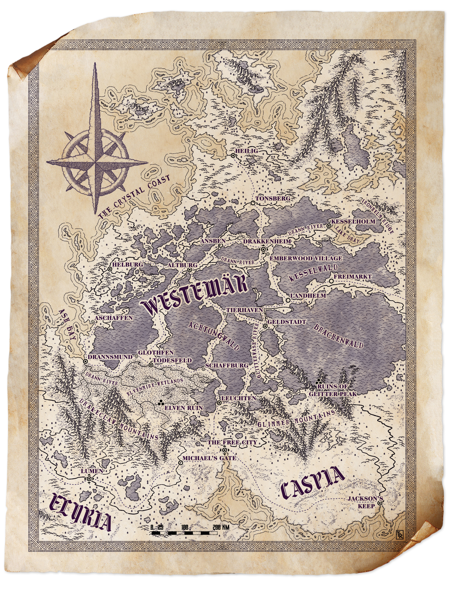

this section describes the overarching world
The people who inhabit the world of Drakkenheim simply call it “the earth” or “the world”. They live on “the continent” that is divided into several nations which people refer to as “the realms”. The largest and most politically influential of these sovereign states are Caspia, Elyria, and Westemär. Neighbouring each are several petty kingdoms and dozens of city states.
The Realm of Westemär stretches north from the Drakeclaw and Glimmer Mountains, along the Crystal Coast to northern tundras. The heartland is made up of deep dark forests surrounding wide flowing rivers, interspersed with areas of fertile marshland. The land is prosperous and rich in natural resources: iron, salt, and coal mines, fine timber, and excellent quarries. These industries supported the realm’s once-great military strength and built the impressive architecture of its cities. As such, the nobility are distinguished, but materialistic and prideful, in contrast to the hard-working and pragmatic common folk.
Drakkenheim was the capital of Westemär and home to the ruling family, House von Kessel. After the meteor fell, the two surviving scions of House von Kessel clashed over succession in a brutal civil war that tore the nation apart. After many assassinations, accidents, and disastrous battles, the civil war ended with no clear victor. Most believe House von Kessel is now extinct, and the throne remains abandoned and empty in the ruins of Castle Drakken. The lands surrounding Drakkenheim are now contaminated, and most villages nearby are deserted. Lacking a sovereign ruler, the nobility manages their own domains directly. They remain deeply divided based on which branch of House von Kessel they supported during the civil war. Many grievances remain, and occasional skirmishes occur between the squabbling barons, counts, and dukes. However, after nearly a decade of fighting, their coffers are empty and their blood is spent. Few possess the will or resources to continue these feuds for the time being. Many noble families possess some relation to the royal line, yet none have the political clout or military strength to press a claim upon the throne and reunify the nation.
The realm of Elyria lies on a large peninsula south of the Drakeclaw Mountains. The land comprises vast rolling prairies and river basins broken up by rocky arid hills and a mountainous coast. Nestled within are pockets of imposing pinewood forests, and great deposits of precious minerals such as gold and silver. Elyrians are known for being kind-hearted and outgoing folk eager to share the bounty of their land. Most live a rural life in small villages along the rivers and coasts. Indeed, the fertile river valleys at the heart of Elyria were an early cradle of civilization, and the countryside is dotted with the ruins of ancient cities. The Holy City of Lumen is the capital of Elyria. The Faith of the Sacred Flame was founded here, and the shining city is the seat of power for the Divine Matriarch. The most fervent and orthodox adherents to the faith are found amongst the Elyrian people. Beyond Lumen, there are few large cities save several bustling port towns that are hubs for international trade. The Elyrian navy is amongst the finest in the continent.
Originally, Elyria was a monarchy, but today, the nation is effectively a theocracy ruled by the Divine Matriarch. As leader of the Faith of the Sacred Flame, the Divine Matriarch has traditionally been regarded as a pillar of wisdom, truth, and justice, so they often mediate difficult political matters. When the Elyrian royal line went extinct, a parliament drawn from the Elyrian nobility determined that the Divine Matriarch would appoint a Lord Regent to lead them. Together, the noble parliament and the Lord Regent would serve as a ruling body for the nation. However, in recent decades, successive Divine Matriarchs have used this power to select a line of caretaker regents who defer to the Faith on virtually all matters of state. While members of the clergy take vows of poverty that preclude them from holding actual political station, the parliament is now mostly made up of fundementalist nobles staunchly loyal to the religion, and the Lord Regent is almost always a close relative of a prominent High Flamekeeper or the Divine Matriarch. As a result, the Divine Matriarch wields de facto political authority in Elyria
The realm of Caspia stretches in an expanse between the Glimmer Mountains and the Diamond Sea. It is a rugged and mediterranean nation, home to a boisterous and affable people led by a constantly squabbling nobility.
Caspians elect their High King once each decade, from candidates put forth by the princes of their noble houses. The valorous deeds and reputation of the noble houses is a major factor in determining the High King. Though Caspian politics are always shifting, especially as the next Kingsmoot draws near, it has stood as a remarkably stable nation. As such, Caspians love to meddle in the politics of Elyria and Westemär. They often intermarry with the nobles of different realms to gain greater clout and influence for the next Kingsmoot.
The realms have been shaped by centuries of war, from Elyrian rebellions against ancient sorcerer-kings, to great battles between rival Caspian princes, and most recently, the civil war that ravaged Westemär. By law and custom, none with arcane spellcasting powers may hold a noble title within the realms. Instead, the noble houses prize the martial arts. Many fighting traditions have developed: armoured phalanxes, archery, fencing, berserking, and diverse unarmed combat techniques. Duels and trial by combat are a particularly favoured means to settle disputes amongst the nobility with minimal bloodshed. The realms of Caspia, Elyria, and Westemär have each developed their own distinctive styles and practices for such contests.
Commerce, rather than conflict, defines everyday life for common folk in the realms. Merchant caravels and ships frequently carry cargo across the Diamond Sea from the Caspian port of Jackson’s Keep or the independent city-state of Liberio. Other vessels depart from the ports of Drannsmund in Westemär and Angel’s Landing in Elyria, and sail the Middle Ocean to the far west. Trade caravans from Geldstadt travel across the Twin Vales to distant lands beyond the steppes. Magical goods and services are bought and sold throughout the continent, but only amongst the wealthy and powerful. High-ranking nobles outfit their favoured knights with magical arms and armour, and rich merchants buy spells and wondrous items to safeguard their valuable mundane wares. The manufacture and sale of arcane commodities is controlled by the Mage Guild, a branch of the Amethyst Academy. Under strict edicts recognized across the realms, any mage or trader dealing in magic pays an annual fee to the Mage Guild, and must follow the prices set by the guild. A few are bold enough to skirt these requirements. As a result, smugglers, hired muscle, and rogues can make their fortune in the illicit trade of enchanted gear and forbidden magic items. This underground black market has only expanded since delerium has become such a valuable and sought-after export.
Though the realms boast mighty armies and legal customs, these have little authority outside cities and settled farmlands. Not far off the major trade roads and rivers, the wilderness remains a place ruled by the laws of nature, not the laws of mortals. The dark forest of Achtungwald, the wet bogs of the Elfmire, the massive mountains that separate the realms, the northern tundras, and the arid hills of Elyria are dangerous lands, where dragons, trolls, giants, and monsters keep their lairs. However, these wild places are also home to many people who do not reside under the control of the realms. Living in small tribes, they keep their old ways and old faiths, led by stout-hearted warriors and druids who embrace the fury of the elements.
The continent meets the vast Middle Ocean along its western coast. Across this body of water is a distant continent. While bold and well-travelled merchants often make the voyage, few folk in the realms know anything of those antique lands. East of Westemär are the Twin Vales, nestled between great mountain ranges. Beyond these are expansive steppelands and vast deserts that lead to parts unknown. Off the Crystal Coast, to the north, is the island of Skye, further beyond is the North Pole. South of Caspia is the Diamond Sea; across are realms that often trade with Caspia and Elyria.
Magic suffuses the world of Drakkenheim, but mortal spellcasters are rare. Only about one in every thousand people can cast spells, and roughly two-thirds of these only ever master cantrips and first-level spells in their entire lifetimes. The few who can work greater magic often wield tremendous personal, social, and political power. Though rare, magic is common currency for nobility, clergy, wealthy merchants, and adventurers. Only a handful of living mortals can cast ninth-level spells. Most are secretive recluses or legendary figures. Harnessing more magical might than most mortals can even comprehend, they often turn their attention away from earthly affairs to contemplate the cosmic order, fighting unseen battles against supernatural foes whose very nature threatens to tear the world asunder. The common folk regard spellcasters with superstition and awe. There was a time when arcane magic users faced extreme persecution, and echoes of those prejudices remain. Few even understand the difference between sorcerers, warlocks, and wizards — they are collectively referred to as ‘mages’. However, commoners can recognize spellcasters who are clerics of the Sacred Flame or mages of the Amethyst Academy by their symbols and attire. Spellcasters who are not (or do not claim to be) members of these recognized organizations are often mistrusted and feared by commoners.
The arcane magic of sorcerers and wizards draws upon otherworldly energies. The ability to tap into these forces is reliant on a recessive genetic trait in mortals - such individuals are called mageborn. Signs that a person is mageborn typically emerge in late childhood or early puberty, usually as random displays of wild magic. In some rare cases it does not develop until adulthood. Mortals who lack the mageborn gene cannot become sorcerers or wizards under any circumstances. By law, the Amethyst Academy takes guardianship over any child born in the realms who manifests magical ability, whether they are a royal heir or commoner. A child who bristles against Academy training — or who was not taken in by them — most often becomes a sorcerer. Bards and warlocks also work arcane magic, but do not necessarily depend on mageborn lineage to do so. Instead, warlocks gain arcane power through pacts with eldritch entities, and bards find supernatural inspiration to harness the Words of Creation. Regardless, many keep their powers secret.
In the world of Drakkenheim, divine spellcasting powers are not granted by gods. Instead, clerics, druids, and paladins learn to cast spells by channeling the supernatural forces of light and shadow that underscore the cosmos. In theory, such powers are attainable by anyone, but in practice only exceptionally gifted individuals master even the lowest-level divine spells. As such, divine spellcasting is viewed as a disciplined and sacred technique attainable only by those with sufficient will and devotion, and only after years of meditation and training. Its practitioners are not considered mageborn. Violating one’s religious tenets will not cause a cleric, druid, or paladin to lose their powers. However, a personal crisis of faith brought on by some discordant change in behaviour and morality could cause an individual to lose their divine spellcasting powers. More often, a cleric, druid, or paladin who commits some grave trespass risks retribution from other members of their religion.
There are many rudimentary techniques for casting a small smattering of cantrips and lesser spells, represented by rangers and subclasses or feats that grant minor spellcasting features. Such characters are viewed as merely dabblers, not mageborn.
In the world of Drakkenheim, gods do not physically manifest in the world, intervene in mortal affairs, or speak directly with mortals. Myths and legends passed down from distant eons tell such tales, but these events have not happened in recorded history. Instead, the inspired words of prophets, oracles, and heroes laid the foundations for the world’s many religions. Powerful extraplanar entities such as archangels, demon lords, and outsiders exist and interact with mortals. Many extensively meddle in earthly matters, making pacts and offering dark counsel. Some even claim to be gods. When asked questions regarding the true nature of the cosmos or divinity, however, they speak in cryptic riddles.
This is the dominant religion throughout the realms. Also known as the Divine Light, its teachings and beliefs are tightly woven into the social and political fabric of Caspia, Elyria, Westemär, and their neighbouring domains.
Myths about the Sacred Flame have ancient roots, but the contemporary religion began a thousand years ago with the valiant Saint Tarna. Although most of her life she was a ruthless warlord, light flickered in her dark heart. Guided by angels, she learned to channel the Sacred Flame and became the first paladin. She took up the cause of righteousness and sacrificed herself to defeat an evil sorcerer-king. After her martyrdom, her disciples spread her teachings and established the Faith of the Sacred Flame.
Faithful of the Sacred Flame do not worship a deity. Rather, devotees pray for guidance from a transcendent divine force that they believe is the source of all light and goodness. Symbolized as the Sacred Flame, this brilliant beacon inspires mortals to act with benevolence, honor, and righteousness. The religion brings a message of dutiful hope: even the smallest flame may light the way through the darkest night. The core tenets of the religion are conceptualized as follows: h The Hearth spreads compassion. One must nourish the hungry; offer shelter to the cold; and give succour to those who suffer. Spiritual warmth comes when the community is gathered together before the Flame as neighbours. h The Lantern illuminates the way of truth. The light reveals what is hidden by darkness, and shows the way to understanding. One should not silence truth, nor speak falsehoods. h The Torch displays the duty of all faithful to uphold the cause of justice. One cannot abide when evil stirs; nor stand idle when corruption spreads: callousness and indifference permit selfishness, greed, and hate to multiply. h The Candle symbolizes hope and redemption. Show those who are in darkness the light. Offer mercy to the guilty; no shadow is absolute so long as a flickering flame remains. Followers of the Sacred Flame believe that when mortals die, the divine light guides righteous spirits to the place where dawn breaks over the Shadowlands. Their luminous souls shine eternally, driving back the endless darkness that threatens all life.
A goblet of fire or a lit candle represents the Sacred Flame in holy symbols. Believers join hands in a circle around a roaring fire and sing hymns during worship rites. The holy text of the faith is called the Song of Fire. Saint Tarna is typically depicted as a silver-haired warrior bearing a longsword. She is often shown in battle against demons and witches, sometimes astride her griffon, Aarak. In Caspia, Elyria, and Westemär, most towns have at least one chapel devoted to the Sacred Flame. Often at the heart of their communities, these domed sanctuaries are built around a hallowed brazier set alight with a golden continual flame. Major cathedrals to the Sacred Flame are found in large cities, and many are brilliant architectural wonders in their own right, decorated with painted murals, stained-glass windows, and statues depicting the saints and martyrs. The small shrines in most villages are usually simply an awning built over a bonfire pit.
keepers. These clerics of the Sacred Flame are predominantly women*; they wear flowing vestments of white, yellow, and gold. Flamekeepers take vows of poverty, eschewing all personal possessions and living on the commonwealth of the faith. Chapels and cathedrals of the Sacred Flame are ministered by a Flamekeeper, who is assisted by a few devoted acolytes. Smaller villages rely on lay ministers to keep their shrines. The highest authority amongst the priesthood of the Sacred Fire is the Divine Matriarch, who tends the Cathedral of Saint Tarna in the holy city of Lumen in the land of Elyria. * Although this represents the formal religious hierarchy, people of any gender identity may become clerics and paladins of the Sacred Flame and rise to positions of honour and reverence.
Through deep spiritual discipline and steadfast devotion, some faithful may become living vessels for the Sacred Flame. These rare individuals hold the power to channel its light in the earthly realm to work divine magic. As clerics of the Sacred Flame, they become enlightened healers, custodians of truth and knowledge, or fiery beacons of light. However, not every cleric of the Sacred Flame becomes a Flamekeeper or participates in the organization and politics of the religion.
Legend claims Saint Tarna was the first paladin. These warriors hold deep reverence amongst the faithful, as only truly virtuous souls can wield the Sacred Flame as she once did. Paladins of the Sacred Flame swear sacred oaths of devotion, redemption, and vigilance. Inspired by Saint Tarna’s example, many join knightly orders ordained for righteous purposes. Such companies of holy warriors and their martial retainers embark on quests and crusades to destroy supernatural forces of evil and root out creatures of otherworldly darkness. The most wellknown and decorated amongst these militant fellowships are the Knights of the Silver Order.
Although many people keep the Flame, there are hundreds of smaller religions with disparate beliefs, doctrines, and practices. Here are some of the most notable.
This disparate religion is dedicated to a pantheon of primal deities who have whispered to mortals through nature for untold generations, such as primal Nodens, vengeful Kromac, honorable Nuada, and nurturing Danu, but there are countless more. Their beliefs and practices vary widely based on the tenets of the specific patron god, but their myths often surround the elements, the seasons, the land, and ancestor worship. Many such beliefs originated with the ancient orcish and dwarven peoples of the continent. Others are closely connected to mysterious entities who inhabit extraplanar worlds such as Dreamland, the Elemental Chaos, or the Feywild, and are often kept by the elves. Druids are particularly common adherents and priests of the Old Faith, but clerics and paladins of the Old Faith are not unknown.
Throughout the ages, various ‘shadow faiths’ and heretical sects have emerged surrounding the Sacred Flame, some of which embrace an opposing force called the Exalted Darkness. These cults develop their own mysteries and esoteric practices, or devote themselves to worshipping enigmatic god-like beings such as Morrigan the Phantom Queen, the Night Serpent, the Lord of the Undead, and powerful entities who inhabit the Shadowlands or the Abyss. Some of these chthonic entities seek to devour the light and plunge the world into darkness unending. However, not all of these faiths are evil, with practitioners who view shadow and light as part of a necessary balance. Regardless, followers of the Sacred Flame condemn these beliefs, banishing their rites and practices. In the same manner that deep faith and contemplation leads followers of the Sacred Flame to become clerics and paladins, one may also channel the Shadow itself. Clerics are heralds of twilight, trickery, magic, and death, and paladins often invoke dark oaths to vengeful causes or ambitious conquest. Followers of the Shadow Faith may even become warlocks, embracing dark and fiendish patrons.
During antiquity, mighty sorcerer-kings ruled a continentspanning empire using their immense arcane power. The sorcerer-kings became tyrants who scarred the land with magical wars and held those without arcane magical power in bondage. The iron rule of the sorcerer-kings was ended by the clerics and paladins of the Faith of the Sacred Flame a thousand years ago. However, those born with arcane magical ability have faced discrimination ever since, and at times, the religious ministry has endorsed vicious persecution against mages. Even today, many common folk consider a mageborn child a terrible curse. Outright conflict ended with the Edicts of Lumen, a magical treaty between the Amethyst Academy, the continental nobility, and the Faith of the Sacred Flame. Signed three centuries ago, this agreement separates the political and economic powers of clergy, mages, and nobles. The Edicts of Lumen comprise six main articles:
Sages of the Amethyst Academy have put forth differing theories to explain the order of the cosmos throughout history. These included bizarre concepts such as the “great wheel”, the “world axis”, the “conjunction of the spheres”, “planetary orbits”, and “general relativity”. There is no consensus; every theorist is quick to point out the glaring flaws and logical inconsistencies in competing hypotheses. Most mortal knowledge of the planes comes from contact with extraplanar creatures via summoning magic or divination spells such as contact other plane. Deliberate planar travel by mortals is the stuff of legends. The knowledge and material components for the plane shift spell are jealously guarded secrets. However, there are countless ley-lines and thin places where the unwary might slip between worlds. Described below are the most well-known, but countless others exist.
The mortal world is a sphere of rock that orbits a fiery sun. Several moons and planets join this cosmic dance, all suspended in an endless astral void. Far away, the sparkling stars are other suns. Who can say what distant worlds lie among them?
These worlds are metaphysically close to the mortal world, such that some creatures can pass through the Ethereal Plane into the mortal world, and rarely vice-versa. The Ethereal Plane. A truly liminal space, this plane is the metaphysical border between the mortal world and the other planes. Dreamland. This strange realm is the mortal unconscious made manifest. It is a world of thoughts, dreams, and nightmares, inhabited by impossible creatures. The Feywild. The realm of fey is sometimes called by different names, such as Tír na nÓg, Wonderland, Avalon, Elfhame, and the Elusive Realm. It is uncertain whether or not these names refer to regions within the realm or are in fact distinct worlds entirely. The Elemental Chaos. A primordial place of raw energy and unbridled potential, the individual planes of air, earth, fire, and water are found within its churning storms and burning seas.
The afterworlds are places where mortal souls go when they die. There has been no recorded instance of a living mortal physically entering these planes and returning. However, the creatures who inhabit these worlds can be contacted or summoned using powerful spells. The Shadowlands. A dark reflection of the mortal world held in perpetual gloom. Most souls pass into the Shadowlands on their way to the afterworlds, but some wander here forever. Why certain souls remain in this place, and others pass on is the subject of many religious myths. The energies from this place may be invoked to create undead. Eternity. The sacred celestial afterworld where angels dwell. Little is known about this holy place, but many religions believe it is a paradise for righteous souls. The Abyss. Interchangeably referred to as Hell, sages believe that mortal souls are transformed into demons or devils in this fiendish afterworld. These evil beings plot mayhem and conspiracy against mortals when they are not waging endless war amongst themselves. Few mortals understand the distinction between such fiendish creatures.
Many different people lived in Drakkenheim. The neighbouring countryside and the realms beyond are no less diverse, though humans make up the majority of the population in the current age. In ancient days, the industrious dwarven folk built great underground empires, the alien elves raised mystical towers, while the orcish people constructed monuments and menhirs to honor their old gods. Today, their descendants and those of many other ancestries inhabit the continent, though few would associate their varied biological distinctions with any single nation, culture, or religion.
Many dwarves tell tales of ancient underground kingdoms that hoarded vast mines of gold and gems and fought great wars miles below the surface. The foundations upon which Drakkenheim were built date back to these times, and traces of dwarven architecture and engineering can still be found in the fortifications, aqueducts, and deep vaults of the city. However, the days of the dwarven realms have long passed, and the dwarven people have no great holds of their own any more. Still, many dwarves dwell in the mountains and keep the traditions of their ancestors: mining, smithing, and engineering. Many more are much less tied to these traditions now, so it is not unusual to see a small number of dwarves in just about any community.
No one knows when elves came to these lands, or exactly how they got here. Even the most ancient among them tell little more than vague myths about their origins. These stories claim that millennia ago, the elves came into this world through fairy realms and shadow gates from a distant and long-lost land. Why the elves left, none can say. Today, the elves live in diaspora. Only a handful of elven families dwell in even the most populous regions. Although rare, they are no longer regarded as strangers to these lands. In fact, half-elves are now much more common than those of pure elven descent. Though elves remember little of their history, they still possess great knowledge of magic. The few elven ruins found across the continent contain mysterious portals and arcane lore. The reason they were abandoned remains unknown.
These smallfolk often form their own communities within settled lands, just as often as they live alongside the other people of the continent. Many live a rural life, tending farms, orchards, and fishing villages. Dozens of halfling villages surrounded Drakkenheim, the bounty of their fields feeding the city. Though these communities were not outright destroyed when the meteor struck, they have not escaped its devastation. The eldritch contamination spreading from the ruins and the threat of monstrous raiders have forced many smallfolk to abandon their homes. Their once-quaint underhill abodes and welcoming hamlets are now eerie ghost-towns.
Most of the population of the continent are humans, who range in all shapes, sizes, colours, skills, and beliefs. Humans tell countless tales of their origins, and tend to regard wherever they were born as home. They formed many of the great noble and royal houses of the continent, and the endless conflicts between these families have defined the political landscape of the realms. One such family, House von Kessel, ruled Drakkenheim until the meteor and years of civil war ended their regal line. Humans have long mingled with other peoples, resulting in half-elves, half-orcs, and half-dragons. Though such people often bear distinct physical traits, such individuals are recognized for their shared human origin. Indeed, humanity has often intentionally sought to enhance their lineages. During antiquity, many powerful sorcerous dynasties infused their bloodlines with the essence of infernal and celestial entities, bequeathing their progeny with an enduring magical legacy. Though these old empires have long since fallen, their descendants have since spread throughout the world.
Though their populations are sparse, many other peoples inhabit the world of Drakkenheim, including catfolk, dragonborn, gnomes, goblins, orcs, and tieflings. No matter their origin, there is no reason any type of character would be out of place arriving in Drakkenheim. Players should work with the Game Master to invent how their ancestry choice could have a place in Drakkenheim.
Year -12. A golden comet leads Tarna to the archangels Gabrielle and Michael, and she becomes the First Paladin. Year 1 The Martyrdom of Saint Tarna, who saved the world from the madness of sorcerer-king Xandor XIII. After her martyrdom, her followers share how to channel the Sacred Flame and war against the sorcerer-kings. Circa 300 Rule of the sorcerer-kings finally crumbles. More learn to wield the Light of the Sacred Flame. These faithful clerics organize the early religion. Year 381 Vowing tyrannical mage-lords will never rule again, the newly-established Divine Matriarch of the Sacred Flame endorses persecution against arcane spellcasters. Circa 500 Following a century of persecution, a group of surviving mages form the Amethyst Academy as a secret society to protect themselves. Circa 600 House von Drakken establishes a petty kingdom along the Drann River, where they lay the foundations of Castle Drakken. Year 678 The Knights of the Silver Order are ordained to hunt down the Amethyst Academy. Circa 700 Bloody wars break out between noble houses supported by the Amethyst Academy and houses supported by the Faith of the Sacred Flame. Year 743 The Edicts of Lumen bring an end to the wars by establishing a clear separation between mages, clergy, and nobles. Circa 800 House von Drakken goes extinct, setting off 150 years of succession crises. Year 965 House Von Kessel claims the throne of Drakkenheim and establishes the Kingdom of Westemär. Circa 1000 The monarchy of Elyria crumbles; the Divine Matriarch appoints a Lord Regent. Year 1,015 The Clocktower of Drakkenheim mysteriously stops. Year 1,093 Lucretia Mathias pens an essay predicting the early return of Tarna’s Comet, and that its earthly arrival heralds the dawn of a new age for the faithful of the Divine Light. Her apocalyptic predictions are extremely unpopular within the mainstream clergy and her writings are suppressed. Year 1,111 The meteor strikes Drakkenheim on September 16th at 8:13 PM. Year 1,112 A failed attempt to reclaim Drakkenheim results in thousands of soldiers dying in the Haze. The few who return are stricken with madness. Year 1,113 Lucretia Mathias greatly expands her original work and publishes the Testament of the Falling Fire. The accuracy of her early prediction garners her a significant following, and she plans a personal pilgrimage to Drakkenheim. Year 1,114 After two more military expeditions to reclaim Drakkenheim fail disastrously, the succession crisis between the surviving members of House von Kessel boils over, setting off the Westemär civil war. Year 1,115 As the civil war rages, several groups of adventurers investigate the ruins of Drakkenheim for plunder. Unexpectedly, some return alive. They speak of horrible monsters within, and bring strange samples of a dangerous crystal. Year 1,116 Lucretia Mathias completes her pilgrimage to Drakkenheim, personally reaching the Crater’s Edge. She returns to Elyria to spread her teachings. Year 1,117 The Amethyst Academy starts hiring adventurers to collect the “meteor shards” for study. They name the strange crystals delerium. Year 1,119 Mannfred von Kessel is assassinated. Cecilia von Kessel dies mysteriously. The civil war fizzles out with no clear successor. Year 1,120 Lucretia Mathias is branded a heretic and excommunicated by the Divine Matriarch of the Church of the Sacred Flame. She returns to Drakkenheim. Year 1,121 More adventurers venture into the ruins of Drakkenheim. Emberwood Village becomes a hub for treasure-seekers and cutthroats alike. Year 1,122 Belief in the Falling Fire spreads rapidly, and more pilgrims make the dangerous voyage to Drakkenheim. Few are successful. Year 1,123 The 4th Provisional Expeditionary Force to Reclaim the Capital — the Hooded Lanterns — are established and make their first forays into Drakkenheim. ear 1,124 The Hooded Lanterns finally establish a base of operations at the old Shepherd’s Gate and then the Drakkenheim Garrison, but cannot make further progress into the city. Year 1,125 A small group of the Followers of the Falling Fire established a foothold in Saint Selina’s Monastery to aid future pilgrims to the crater. Year 1,126 March 4 — Dungeons of Drakkenheim begins.